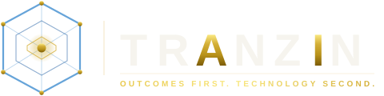

Three anchors behind every slide that follows — what makes this credible today, not a multi-year promise.
Our Context-First AI Platform — MCP-ready, 34+ connectors, TTL & trust scoring on every data point, semantic knowledge graph. Not slideware.
VionOS at Launch Warwick — same architecture pattern (Oracle-class legacy POS, siloed CRM, fragmented reporting) wrapped and made agentic. In production today.
23+ years of enterprise delivery. Oracle ERP, AWS/Azure, Enterprise Architecture, Fortune 500 + government track record. Tranzin owns engagements end-to-end.
| Goal | What it means in practice |
|---|---|
| 1 · Interoperability | Oracle ↔ SQL Server ↔ Salesforce ↔ Reporting reachable through one abstraction |
| 2 · Data Readiness | Cleaned, normalized, governed single source of truth |
| 3 · Agentic Layer | AI agents that query, trigger workflows, generate insights, take constrained actions |
| 4 · Guardrails | Access control, audit, explainability, safe execution |
| 5 · Scalable | Modular, composable, API-first / event-driven — built to extend |
Our Context-First AI Platform ships MCP-ready with 34+ pre-built connectors, TTL & trust scoring on every data point, and a semantic knowledge graph. Framework-agnostic — Claude, GPT, CrewAI, LangGraph, custom.
CONNECT · TRUST · EVOLVE
VionOS at Launch Warwick is the same play, one vertical over. Legacy POS (Oracle-class), siloed scheduling, fragmented reporting, 45 cameras — wrapped into an agentic operating system. 8 AI crews, MCP gateway, knowledge graph, edge AI — all running today.
WE LIVE IT — WE DON'T JUST READ ABOUT IT
23+ years of enterprise delivery — Oracle ERP, AWS/Azure, Enterprise Architecture, Data Analytics + AI practices. Onshore + offshore at competitive rates. MBE / WBE / DBE certified.
ARCHITECT · BUILD · OPERATE · SCALE
What Tranzin brings into each layer of your Agentic Enterprise Architecture — the same stack we deploy at every client, tuned to a regulated banking posture.
| Layer | What we bring — banking edition |
|---|---|
| 1 · Source Systems | Oracle DB + ERP, SQL Server, Salesforce, mainframe / file-based reporting — all in our active delivery portfolio. |
| 2 · Interoperability · MCP Gateway | MCP-ready server exposing business context to any agent framework. 34+ pre-built connectors. API + event-driven adapters (Kafka, EventBridge, Service Bus). |
| 3 · Governed Data Layer | Bronze → Silver → Gold ETL pattern (production-proven at LW). Postgres / Snowflake / Databricks. TTL + trust scoring + source tagging on every data point. Catalog + lineage. |
| 4 · Agentic Reasoning | Semantic knowledge graph, AI crews (CrewAI, LangGraph, custom), reasoning service with tool use, observability + cost tracking baked in. Framework-agnostic. |
| 5 · Action | Workflow engine, notification fabric (Slack, email, SMS, CRM push), human-in-the-loop approval gates, immutable audit trail, decisioning APIs. |
Where the platform creates revenue, reduces loss, or removes cost — by banking function.
| Function | Agentic Use Case | Class |
|---|---|---|
| Lending / Credit | Loan-officer copilot: pull customer 360 from Oracle + Salesforce, score risk, draft term sheet, flag exceptions | Insight + Action |
| Risk & Fraud | Real-time anomaly triage — transaction streams → fraud agent → constrained action (hold, escalate, notify) | Decisioning |
| Customer Retention | Churn-prediction agent reads usage + service tickets → outreach workflow under approved scripts | Insight + Action |
| Operations | Branch + back-office staffing optimizer (same pattern as VionOS StaffingOPS at Launch Warwick) | Live pattern |
| Compliance & Reporting | Static reports → on-demand intelligence: agent answers “show me X” in natural language with sourced data | Insight |
| Marketing & Cross-sell | Segmentation + offer-design agent reads CRM + transaction patterns, recommends + executes campaigns under approval | Action |
| Audit & Explainability | Every agent action carries source data, model version, timestamp, approver — court-ready audit trail | Governance |
A production platform that gives AI agents fresh, trusted, scored business context — so they reason with confidence, not guesses.
34+ pre-built connectors — ERP, CRM, POS, phone, scheduling, ads, census, plus banking-specific adapters (Oracle, SQL Server, Salesforce, core banking, bureau feeds).
Every data point carries TTL (time-to-live), source tag, and trust score. Agents know what's fresh vs. stale, what's reliable vs. unverified.
Context updates automatically as the business changes — no manual refresh. The knowledge graph evolves with you.
Available as managed service or licensable enterprise framework.
Five layers. Layer 1 stays unchanged — we wrap, govern, and reason above it. Migration optionality preserved: replace Oracle / SQL Server / Salesforce when economic, not as a precondition.
The setup. 42,000 sq ft entertainment facility. Acquired Dec 2024. Legacy POS (Oracle-class) with no API-first architecture, siloed CRM, fragmented reporting, 45 cameras nobody watched, staff scheduled by gut feel. Same shape as your bank — one vertical over.
| Sense | Think | Act |
|---|---|---|
| 45 cameras + NVIDIA Jetson edge AI | 8 AI crews + Brain knowledge graph (Cognee) | Auto-bookings, in-venue displays, Slack alerts, marketing actions |
| POS / CRM / ads / weather / competitor scraping | MCP gateway exposing 9+ tool servers to Claude | Staffing recommendations, party follow-ups, SEO action items |
| Workforce scheduling + transaction history | Weekly staffing projector with per-day YoY decline factor | Hour-by-hour shift plan + RPLH targets delivered to GMs |
| Inbound phone calls | Voice AI reasoning service | Books bookings without staff — 24/7 |
| Product | What it does | Result |
|---|---|---|
| StaffingOPS Headline outcome |
Reads POS history + shift data, projects next week with per-day YoY decline factors, recommends hour-by-hour staffing. Over- and under-staffed slots flagged before they happen. | Material weekly labor optimization across 2025 → 2026 — cited as one of the strongest VionOS outcomes. Specific figures shared in discovery. |
| CustomerOPS | AI customer journey — answers 100% of calls 24/7, books transactions without staff | $20K+/yr recovered bookings — calls that were going to voicemail |
| VisionOPS | Edge AI on existing cameras — zone analytics, safety detection, auto-clips | +22 min dwell time from one operational fix surfaced by the data |
| MarketingOPS | 8 AI agents — budget, SEO, competitive intel, partnership discovery | $3 / run replaces $8–12K/mo agency spend |
The architecture is vertical-agnostic. Here is the one-to-one mapping from the proven deployment to your environment.
| Layer | Launch Warwick — proven | Your Bank — proposed |
|---|---|---|
| 1 · Sources | POS (Oracle-class) · ads · scheduling · CRM · 45 cameras · phone | Oracle DB · SQL Server · Salesforce · reporting cubes · files |
| 2 · MCP / Interop | MCP Gateway · 9+ tool servers · plugin system | MCP Gateway · Oracle / SQL / SF adapters · event bus (Kafka / EventBridge) |
| 3 · Governed Data | Postgres + Neon DW · Bronze → Silver → Gold · TTL + trust scoring | Snowflake / Databricks · same ETL pattern · catalog + lineage · same trust + TTL |
| 4 · Agentic Reasoning | 8 AI crews · Cognee knowledge graph · CrewAI + Claude + GPT | Loan, fraud, churn, reg-reporting, marketing agents · semantic graph · same model layer |
| 5 · Action | Auto-bookings · displays · Slack · weekly staffing plan to GMs | Lending workflows · customer outreach · risk alerts · regulatory reports · audit log |
| Cross-cutting | JobRunTracker · OTel + Langfuse · cost tracker · 100% audit | Same pattern — hardened to FFIEC / SOX / GLBA / OCC controls |
Six agentic decisioning use cases, sized for early wins on the way to portfolio scale.
| # | Agent | Reads | Decides | Acts |
|---|---|---|---|---|
| 1 | Loan Prioritization | Oracle core + Salesforce + bureau | Propensity-to-close + risk score | Routes hottest leads to officers with pre-drafted term sheets |
| 2 | Fraud Triage | Transaction stream + SQL Server analytics | Anomaly classification + severity | Holds transaction · alerts analyst · drafts SAR-ready notes |
| 3 | Churn / Attrition | Salesforce + service tickets + transaction velocity | Churn probability + cause | Triggers retention play (call, offer, escalation) under approval |
| 4 | Branch Ops Optimizer Proven at LW | Workforce + transaction + foot-traffic + weather | Over/under-staffed predictions w/ per-day YoY decline factor | Hour-by-hour shift plan + RPLH-equivalent targets to branch managers |
| 5 | Regulatory-Report Copilot | Governed data layer + policy docs in graph | “Show me X” in natural language | Drafts report + source citations for human sign-off |
| 6 | Cross-Sell Recommender | Customer 360 + product catalog | Next-best-offer per customer | Drafts campaigns + routes to CRM under marketing approval |
| Phase | Weeks | Deliverable | Maps to your goals |
|---|---|---|---|
| 1 · Assess | 2–4 | AI Readiness Score · system inventory · use-case backlog · architecture baseline | All 5 |
| 2 · Architect | 4–6 | Target-state Agentic Enterprise Architecture · MCP gateway design · data layer + governance blueprint · 1 lighthouse use case selected | Goals 1, 2, 4, 5 |
| 3 · Accelerate | 8–12 | Lighthouse use case live in production (e.g. Loan Prioritization Agent) · 2nd use case in build · platform hardened | Goal 3 + part of 4 |
| 4 · Staff | ongoing | Onshore-offshore delivery team · AI/ML engineers, data scientists, Oracle / SF / Cloud specialists · training for your team · ongoing managed-service option | Sustains all 5 |
Engagements rarely stop at the platform. Here is what Tranzin brings in alongside the Agentic Enterprise build.
| Adjacent Capability | Why it matters for your bank |
|---|---|
| Oracle ERP / DB delivery | Your primary system of record — we don't just integrate, we extend. |
| AWS / Azure solution delivery | Wherever the target cloud lands; deep practice in both. |
| Enterprise Architecture & Portfolio Management | Multi-year transformation roadmap, not just one project. |
| Data Analytics & AI practice | Beyond agentic — classical ML, forecasting, segmentation, BI. |
| AI Training (12-module curriculum) | Up-skills your engineers and analysts so the platform actually lands. |
| Staff Augmentation | AI/ML engineers, data scientists, Oracle / SF / cloud specialists — on demand. |
| Blockchain — Corda / Hyperledger | Optional — tokenized assets, interbank settlement, supply-chain provenance. |
Tranzin engagements are delivered through an integrated onshore + offshore team based in Chicago, India, and Canada — 24-hour delivery coverage at competitive rates.
Applicable to U.S. public-sector and supplier-diversity programs; details shared on request.
Three steps. Two weeks to first commitment. The Assess phase is fixed-fee — you see the target architecture and the first use case before scoping anything larger.
One hour — your architecture leads + Tranzin. Confirm system inventory, target use case, success criteria.
Weeks 1–4. AI Readiness Score, target architecture, lighthouse use case selected. You leave with a buildable plan.
Architect + Accelerate phases to first agent in production. 12–18 weeks typical.